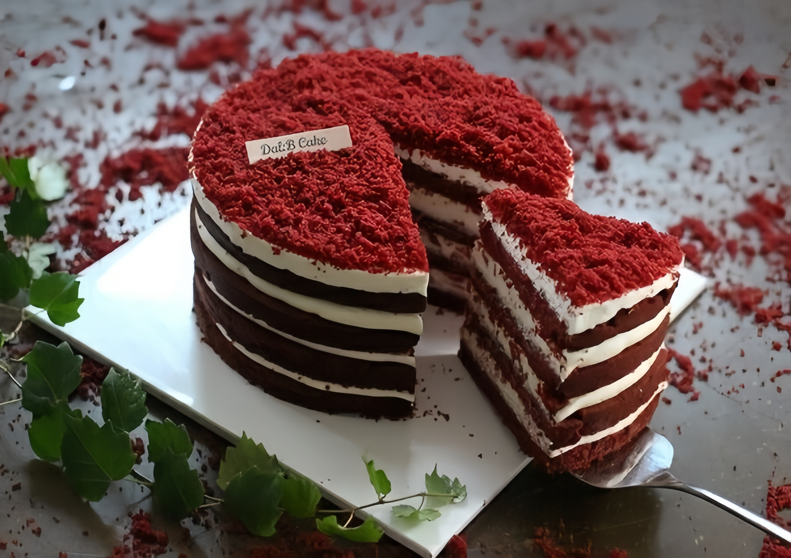

Red velvet
La Red Velvet es un pastel icónico por su intenso color rojo y su textura suave y aterciopelada. Combinado con un delicado frosting de queso crema, ofrece un equilibrio perfecto entre dulzura y cremosidad que lo hace irresistible.
Ingredientes
Para el bizcocho
Para la cubierta de queso
Preparación
Para la leche ácida
- Colocar la leche y el jugo de limón en un bol e integrar con batidor de alambre.
Para el bizcocho
- Precalentar el horno a 160°C.
- Preparar 3 moldes de 20cm de diámetro y 3 cm de alto con papel manteca en la base.
- Colocar la mantequilla en un bol y batir con batidora eléctrica hasta obtener una preparación cremosa.
- Agregar el azúcar blanco y el colorante y batir hasta obtener un cremado.
- Adicionar los huevos de a uno, batiendo después de cada adición. Agregar la esencia de vainilla. Integrar.
- En otro bowl tamizar los secos: la harina y el polvo de hornear.
- Adicionar los secos y leche ácida a la preparación intercalados. Integrar.
- Añadir el bicarbonato al vinagre. Va a hacer efervescencia. Incorporar a la preparación.
- Dividir la preparación y colocarla en las 3 tarteras.
- Hornear por 25 minutos o hasta que al pincharlos con un palito éste salga limpio.
- Dejar enfriar a temperatura ambiente. Reservar.
Para la cubierta de queso crema
- Colocar la manteca pomada (a temperatura ambiente) en un bowl.
- Batir con batidora eléctrica para que quede bien cremosa.
- Tamizar el azúcar impalpable, agregándola al bowl con la manteca.
- Nuevamente, batir con batidora eléctrica para que quede bien cremosa. Es importante que la preparación quede bien integrada y homogénea.
- Agregar el queso crema batiendo hasta integrar completamente.
Para el montado
- Colocar un punto de queso crema en el pie de torta para que no se muevan los bizcochos.
- Desmoldar los bizcochos.
- Colocar el primer bizcocho y por encima una capa de queso crema.
- Colocar el segundo bizcocho y otra capa de queso crema.
- Colocar el último bizcocho dado vuelta.
- Cubrir la torta con el queso crema restante.
- Decorar la torta con fresas naturales.
Tips
Para que el pastel quede húmedo y tierno, no mezcles en exceso la masa después de agregar la harina; basta con integrar los ingredientes justo hasta que estén combinados. Esto evita que se vuelva denso.